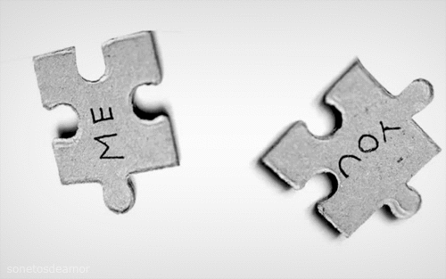

Not a fairy-tale, but a story.
It's so beautiful, that our hearts can effortlessly love many simple things like a smile, a flower, a kid. Like a cloud is made of every single drop of rain, a person is meant to us for every thought, every memory, every flaw of theirs. Sometimes, few people run the wildfires at heart just with a spark of the persona. I feel, I met the right people at the wrong time and wasted the right time with the wrong people.
We both are from different routes but my heart whispers to me that somewhere we belong and our paths crossed or our separation is just a bridge to connect us back when we're done rebuilding ourselves. Carrying myself with the thoughts don't seem bitter. It's always sweet to reminisce fondly with the memories shared with you. If it is the pain that's trying to introduce herself to me, the euphoria of cherished conversations I had with you counterfeits the pain.

Moments
All these conversations I have in my mind are the letters that I can never send. You softened my heart, and it would be hardened to the core if it's replaced. One thing I've learned from you is not to label the things happened for reasons. Maybe I'm a little irrational, I don't look at facts and rules. I just go after what I see, what I admire and what I adore. Maybe, a fool to wait a lifetime for that one moment that never happens.
Your mind is with many crests and troughs, life will set you straight.
Maybe, you were sent to befriend me to gather myself or you were sent to help me to love myself and adore a bit of what I do to you. If you let your heart break it makes a point to let go everything beautiful and love about that person. I believe, as long as the pain changed to art you would never be broken.
Pieces to peace
You have inevitably been a writer remembering everything told, saw and felt to compose them into stories and moments that could be remembered until the memory lasts. I might even forget some important dates or things but the words you said they're unforgettable. You're not one such person who comes back after a while but the one who never leaves. Maybe that's one thing which made me feel loved. All those pieces weaved through the magic of you to make the heart feel peace.